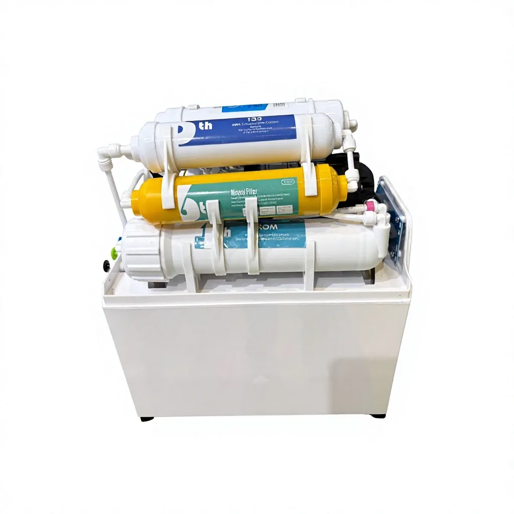

RO Membrane Element
RO Membrane Element — Function: TDS, salts and heavy metal reduction.
Send Inquiry
Built-In Pressure Tank RO Water Purifier 100G/200G should be selected by membrane capacity, feed-water pressure, filter-stage layout, installation position and service access. For distributor or appliance-brand programs, confirm the faucet, tank or tankless layout, replacement filters and private-label packaging before quotation. Key specifications include Filtration stages: 5 stage RO water filter: PP, UDF/GAC, CTO, RO membrane, T33 post-carbon; Capacity: 100G / 200G options for OEM distributor programs.
Buyers comparing Built-In Pressure Tank RO Water Purifier 100G/200G should look beyond the model name and check membrane output, filter-stage sequence, inlet-pressure range, service access and installation format. For OEM RO water purifier programs, the quotation should also define panel language, faucet or tank options, replacement filters, logo placement and export carton requirements.
For Built-In Pressure Tank RO Water Purifier 100G/200G, use this model when the buyer needs a defined purifier configuration with practical installation details, replacement filter planning and export carton control. The page should answer how the unit fits into a kitchen, office or commercial drinking-water program before repeating broad RO or OEM claims.
| Filtration stages | 5 stage RO water filter: PP, UDF/GAC, CTO, RO membrane, T33 post-carbon |
|---|---|
| Capacity | 100G / 200G options for OEM distributor programs |
| Storage tank | Built-in pressure tank for compact cabinet installation |
| Color | Standard white; OEM color and front panel options available by order plan |
| Housing | Compact under sink cabinet with integrated filter and tank layout |
| Installation | Under sink / kitchen cabinet / point-of-use drinking water installation |
| Application | Residential kitchens, apartments, office pantries, appliance brand programs |
| OEM/ODM | Logo, panel, filter labels, faucet, tubing, manual, carton and filter set |
| Packaging | Inner protection, color box or brown carton, master carton and pallet options |
| MOQ | From 100 units for standard configuration; final MOQ depends on panel, packaging and branding |
| PP sediment filter | Reduces sand, rust, silt and suspended particles before the water reaches carbon and membrane stages. |
|---|---|
| UDF/GAC activated carbon | Uses granular activated carbon to reduce chlorine, odor and unpleasant taste, helping protect the RO membrane. |
| CTO carbon block | Provides finer carbon filtration for chlorine, taste, odor and small carbon-particle control before membrane separation. |
| RO membrane | The reverse osmosis membrane is the core separation stage for dissolved solids reduction in the compact RO system. |
| T33 post-carbon | Polishes final water taste after storage and supports a cleaner drinking experience for end-user installations. |
Yes. Yuchen Water can quote private-label front panels, logo labels, filter labels, faucet sets, manuals, color boxes and master cartons for distributor or appliance brand programs.
The 100G option is commonly selected for cost-sensitive kitchen programs, while the 200G option supports faster production capacity for higher-use households, offices and premium retail lines.
Yes. The pressure tank is built into the machine body, helping brands offer an under sink RO system with cleaner cabinet integration and more stable stored-water pressure.
The standard 5 stage RO water filter layout uses PP, UDF/GAC, CTO, RO membrane and T33 post-carbon. Filter sequence can be adjusted for confirmed OEM/ODM projects.
Please send target capacity, filtration stage plan, order quantity, branding requirements, packaging type, destination port and any required documentation for your import market.
RO Membrane Element — Function: TDS, salts and heavy metal reduction.
Send Inquiry
PP Melt Blown Sediment Filter Cartridge — Length: 10 inch, 20 inch, 30 inch, 40 inch on request.
Send Inquiry
CTO Coconut Shell Carbon Block Filter — Length: 10 inch / 20 inch / custom.
Send Inquiry
Flat-End UDF Coconut-Shell Granular Activated Carbon Filter Cartridge – Blue End Caps — Visible configuration: Blue End Caps.
Send InquirySend quantity, target market, configuration notes and packaging requirements for Built-In Pressure Tank RO Water Purifier 100G/200G. Yuchen Water will confirm matching options, accessories and export details before pricing.